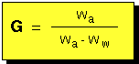
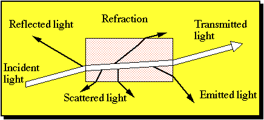

{kind=link}
{kind=link}
{kind=link}
{kind=link}
{kind=link}
{kind=link}
{kind=link}
{kind=link}
{kind=link}
{kind=link}
{kind=link}
{kind=link}
{kind=link}
{kind=link}
{kind=link}
{kind=link}

Klein and Hurlbut (21st Ed) p. 250-270
The terms below are commonly used to describe the general appearance of a crystal.
Euhedral - well formed faces
Subhedral - Imperfectly formed faces
Anhedral - Without faces
There are many more terms that are used (some common.... some esoteric) to describe the outward appearance of a crystal.
e.g., Bladed, fibrous, boytrioidal, etc.
Cleavage - Tendency to break or split along definite planes to produce a smooth surface. The cleavage quality and the number of cleavage directions is related to the internal arrangement of atoms in the crystalline structure and the type chemical bonding between the atoms in the mineral.
If a mineral has "perfect" cleavage, then this means it breaks along a smooth, parallel surface.
If a mineral has "imperfect" cleavage, then this means it breaks along a rough, parallel surface.
If a mineral has "poor" cleavage, then this means it breaks along an irregular surface.
Some minerals exhibit more than one direction of cleavage and therefore, the number of cleavage directions and the angle(s) between the cleavage planes can be very diagnostic.
e.g., Halite - 3 directions of perfect cleavage at 90° angles.
Fluorite - 4 directions of perfect cleavage
Micas - 1 direction of perfect cleavage.
Caution! The size of a crystal is an important factor in understanding all of the above. Often times, crystal sizes are small (40 µm is about the practical limit of hand lens resolution), therefore, these specimens display a massive appearance (i.e., composed of many tiny crystals).
Kaolinite is a mica-like mineral with 1 direction of perfect cleavage. Kaolinite crystals however, rarely grow to be larger than 5 µm. Kaolinite cleavage is something you'll never see with a hand lens.
1 µm = one millionth of meter = 0.000001 m = 1 x 10-6 m
Hardness - Resistance to scratching. A relative scale has been devised by Austrian mineralogist F. Moh and is the popularly known Mohs hardness scale.
Designated by H in systematic mineralogy.
| 1. Talc | 6. Othroclase |
| 2. Gypsum | 7. Quartz |
| 3. Calcite | 8. Topaz |
| 4. Fluorite | 9. Corundum |
| 5. Apatite | 10. Diamond |
Other important relative measures of hardness include:
Fingernail - 2
Pocket knife - 5
Glass - 5.5
Steel file - 6.5
*** Remember to always perform a hardness test in both directions ***
Tenacity - Resistance to breaking.
Example: This is a good method for distinguishing muscovite (elastic - due to dioctahedral sheet structure) from phlogopite and biotite (pliable- due to trioctahedral sheet structure) from chlorite (brittle- due to trioctahedral interlayer sheet structure).
Specific gravity - A measure of the density of a mineral. Defined by the ratio of the weight of the material in air to an equal volume of water.
Designated by G in systematic mineralogy.
 where, Wa = weight in air, Ww - weight in water.
Density versus specific gravity: Remember G is a ratio and therefore has no units. Density (r) has units of mass per unit volume (typically g/cm3). Numerically r and G are the same because we choose to define density using water (i..e., 1 g = 1 cm3 water).
Color - Color results from the interaction of light (a small protion of the electro magnetic spectrum) with matter (mostly electrons). When incident light bombars a mineral it can do one of several things, including:
Reflection
Refraction - coherent scattering
Scattering - incoherent scattering
Absroption - caused by interaction with electrons (the color we see is what is not absorbed).
Fluorescence - emittance of photons as electrons fall back to lower energy states.

Causes of color
Electron Transitions
From the study of the electromagnetic spectrum we know that the energy (E) of light (or any other portion of the spectrum) is related to the frequency of radiation by Planck's constant.
As light impinges on the outer electrons of certain elements, the electrons undergo an energy transiton. These transitions or changes in energy (DE) are quantum (i.e., transitions occur with discrete amounts of energy).
The frequency of these transitions correspond with the frequencies of color in the EM spectrum. This most commonly occurs with transitions of electrons in the 3d orbital of the transition elements (e.g., Ti, Cr, V, Fe...)
Electron transitions that occur in the "color range" are classified into three groups based on the electronic phenomenon causing the transition. These include (1) Crystal field transitions, (2) Molecular orbital transitions and (3) Color centers. Each are briefly discussed below.
The 3d orbitals of transition elements in the free ionic (gaseous) state have 5 degenerate (same) energy states. If the free ion is placed in proximity to a spherical negative charge (i.e., nearing electrons), then total energy of the ion increases. If the ion is in crystal structure, then the interaction of the electron clouds of the ion will inteact with the electron clouds of the coordinating anion polyhedron. The nature of the interactions are highly dependent upon (1) the number of d electrons, (2) the coordination number or the number of anions surrounding the cation, (3) the distance between the cation and anions or distortion of the polyhedron and (4) the orienation of the particular d orbital to coordinating polyhdedron.
The example below shows a dx2-y2 orbital postioned in octahedral coordination. The effect is to raise the energy level of the electron energy state because the clouds are directly opposite the anion ligand. The effect of the dxy orbital would be to decrease its energy level because it is located between the anion ligand.

Examples:
Idiochromatic (major intrinsic element)
Olivine Fe2+ in octahderal coordination - Green color.
Garnet Fe2+ in cubic coordination - Red color
Allochromatic (minor intrinsic element)
Beryl Cr3+ replaces Al3+ in octahedral coordination (shared w/ silicate tetrahedra) - emerald
Corundum Cr3+ replaces Al3+ in octahedral coordination (non-shared) - ruby
Known as charge transfer transitions. The valance electrons shared between molecular structures and the energy change associated with this "hopping process are in the range of light.
Examples include metal to metal transfers such as Fe2+ --> Fe3+ between to sites.
Magnetite is black due to idiochromatic electron charge transfers.
Blue sapphire (corundum) and kyanite results from Ti4+ and Fe2+ substitution for 2 Al3+. The electron hopping between Fe2+ ---> Ti4+ causes absorption of red, therefore leading the blue colors.
Examples include missing F- ions in fluorite defects (see below) which makes purple color. Coupled substitution of Al3+ and Na+ for Si in the commonly occurs a trace levels in the quartz structure. Irradiation of quartz makes electron in tetrhedrally coordinated Al3+ susceptible to relocation and trapping elsewhere in the crystal. This produces smokey quartz.

Play of Colors.
Interference of light at the surface of a mineral as the angle of incidence changes is known as a play of colors. Light will diffract as it passes through regularly spaced mineral boundaries. The wavelength of light that is diffracted from a white light source is related to angle of incidence and the spacing between the diffraction grating. Diffraction theory will be covered in more detail in lecture
Examples include:
Opal which is composed of hexagonally closest packed hydrated-silica spheres.
Labradorite which is composed of altrenating lamellae of different composition plagioclase felspars.
Closely spaced fracture planes, cleavage planes and twinning planes may also cause a play of colors.
Mixture of a finely-dispersed minor impurity phase with a host mineral.
Examples include:
Hematite finely dispersed in quartz - jasper
Watch out in field situations when some minerals appear green. This is many times, due to algae which loves to grow on wet rock surfaces.
Dr. George Rossman at Cal Tech has nice web site that discusses causes of color. Click here to go to his site.
{kind=link}
{kind=link}